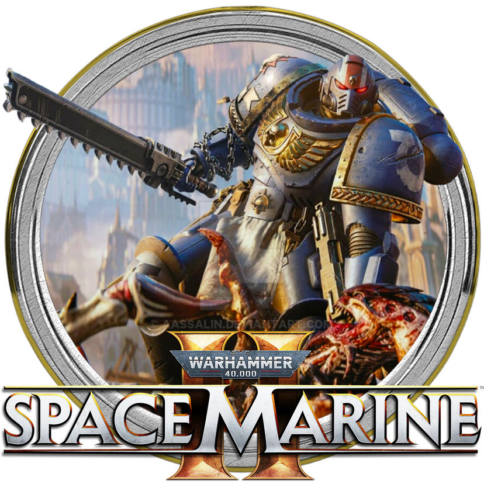

The Gaming Corner
Bienvenidos a The Gaming center. En esta página podrás estar a la última sobre el mundo de los videojuegos. Hablamos sobre los ultimos lanzamientos, fichas técnicas de los últimos exitos y si se nos queda algo en el tintero, no dudes en contactar con nosotros. Segun vayan pasando los días iremos actualizando los bombazos de cualquier índole relacionada con este mundillo ¡A disfrutar!
BOMBAZO
Se rumorea que el ganador al juego de acción del año sería el Warhammer 40k Spacemarine 2. ¡Alucinante!
